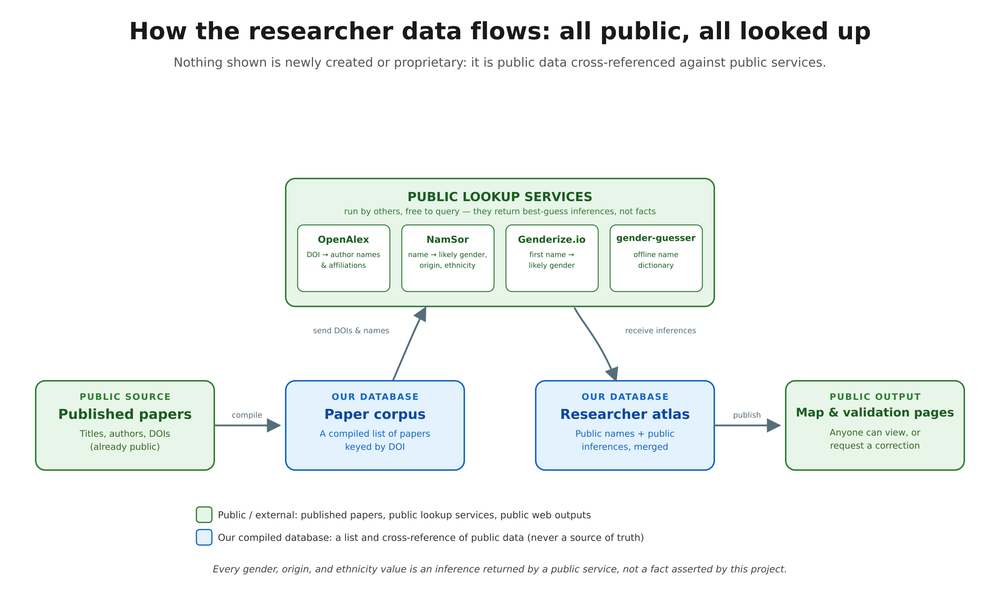
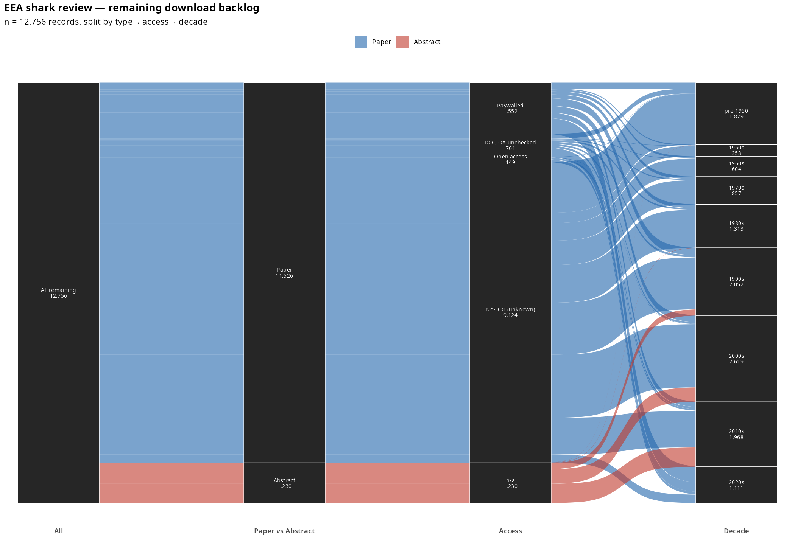
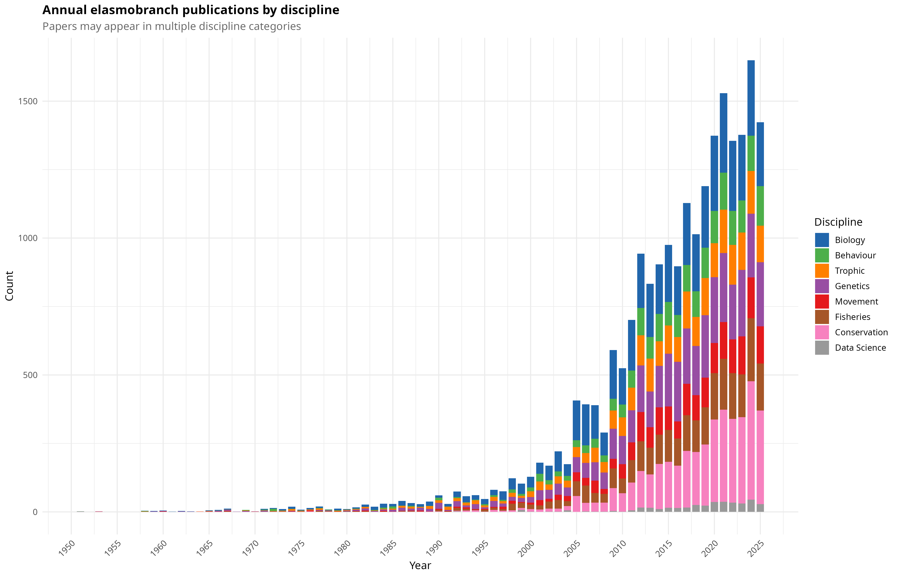
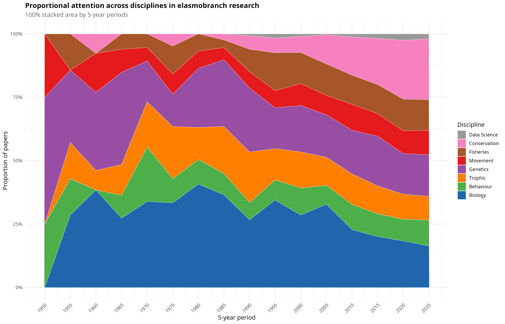
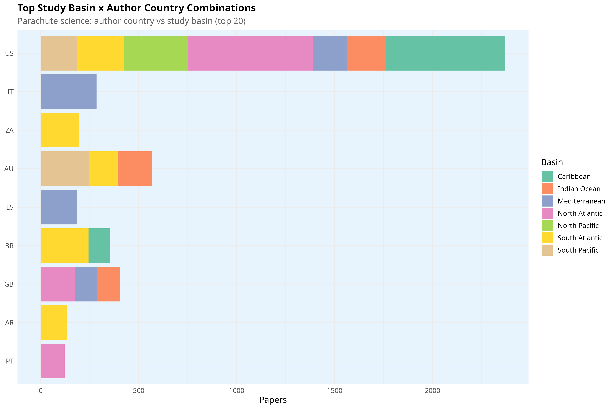
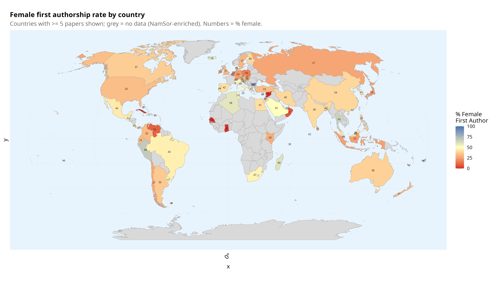
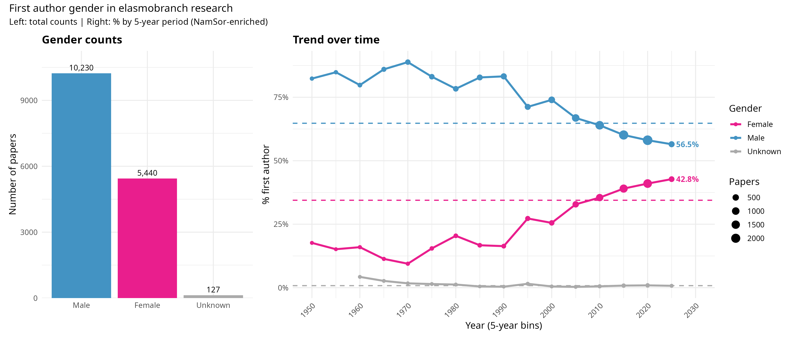
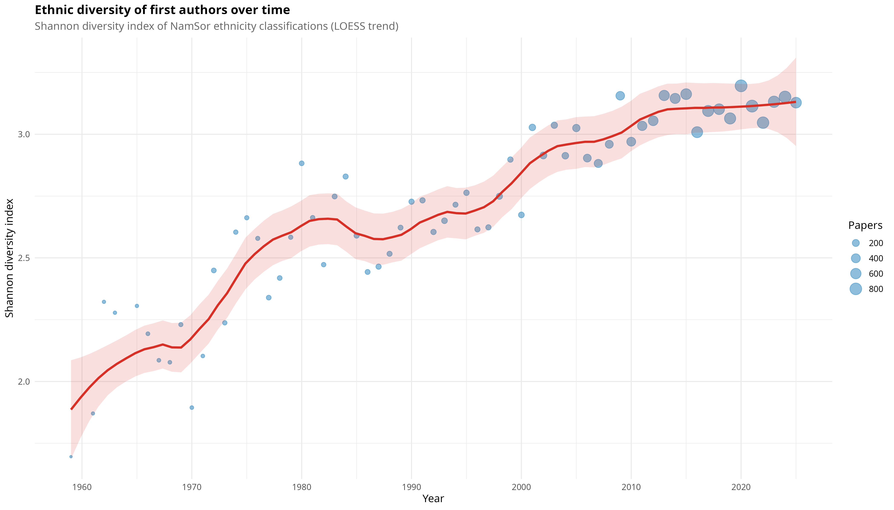
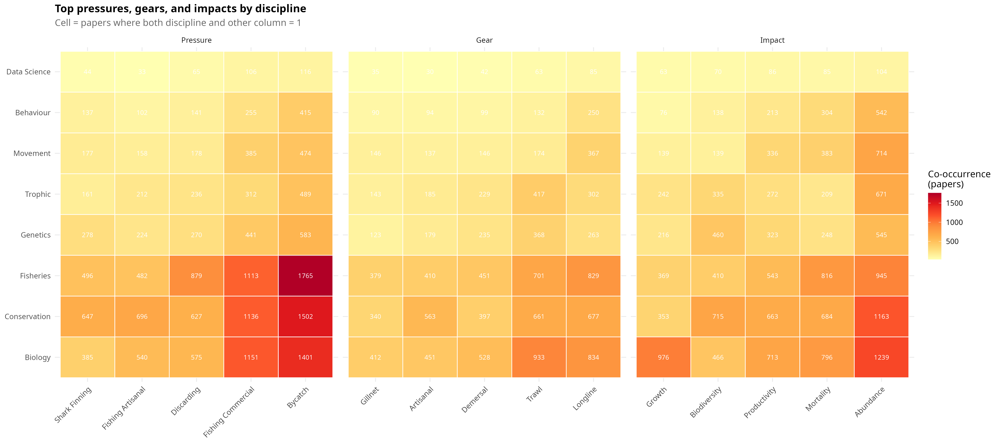
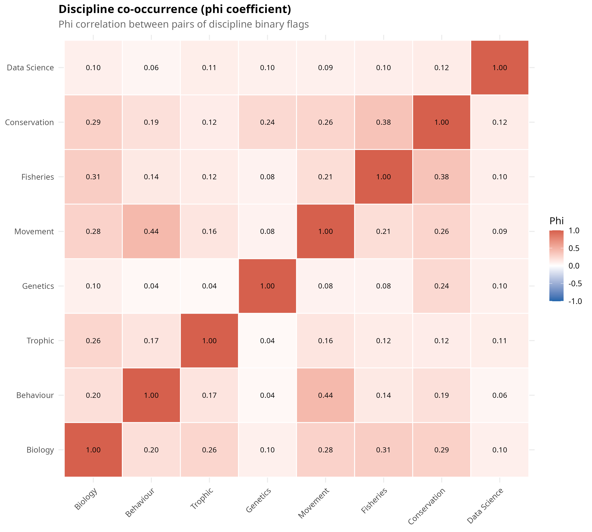

How the pipeline works
From a bare citation to an answerable question: acquisition, OCR, schema extraction, author and citation enrichment, analysis, and natural-language querying.

Live tools
Interactive pages, built from the current corpus snapshot and served directly from this site.
Author Atlas v2
Interactive deck.gl map of ~28,000 authors: geographic clustering, collaboration links, and search by name or institution.
Collaboration Graph v1
Earlier static collaboration-network build (18,633 authors) with a filtered subset view for faster loading.
Validation UI
Search-by-name author pages (28,952) where researchers can review and correct their own papers' automated extractions.
Validation & Rule-Improvement Report
How the rule-based extractor was scored against human and Claude/Fable-oracle reference labels, and how a self-verifying loop improved it (macro-F1 0.16 → 0.43 on the worst columns).
Team Download Task
Instructions for collaborators to claim publisher batches of the 1,530 remaining paywalled papers via institutional library access.
Key figures
A snapshot gallery of the headline analysis figures. Full-resolution PDFs and the complete figure set (160+ plots) live in outputs/figures/ in the repository.
Acquisition backlog

Temporal trends


Geographic


Gender & diversity


Discipline

